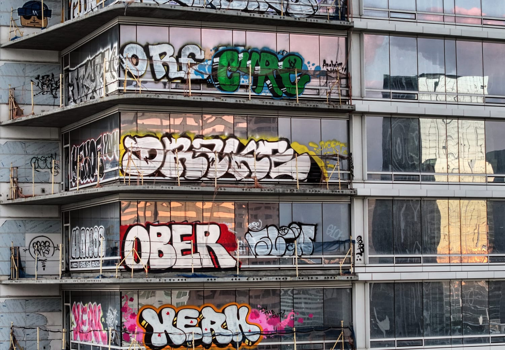
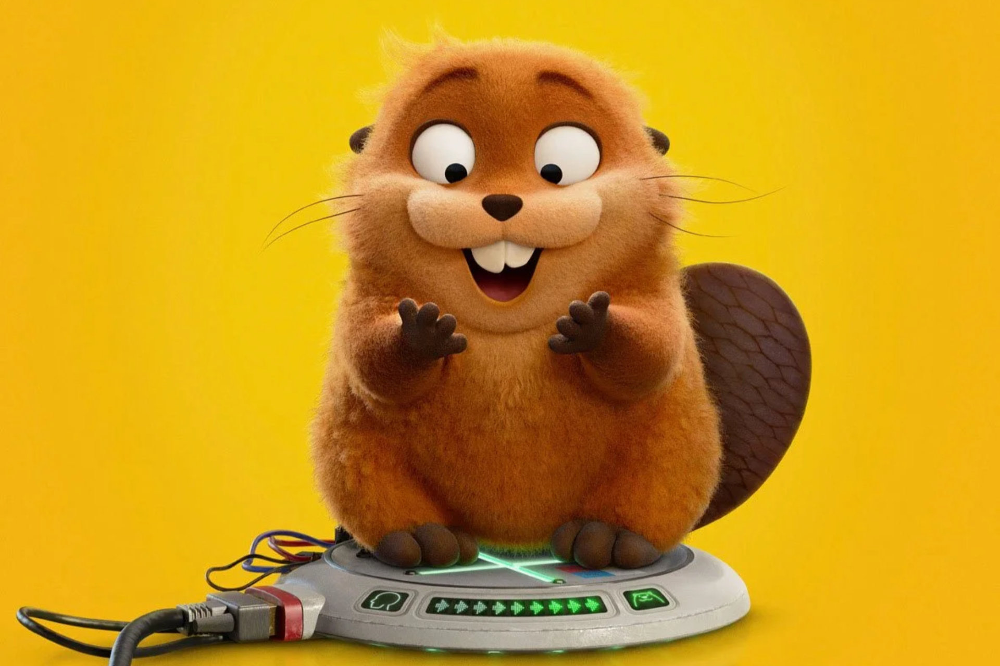
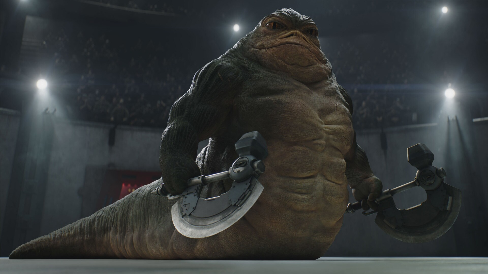
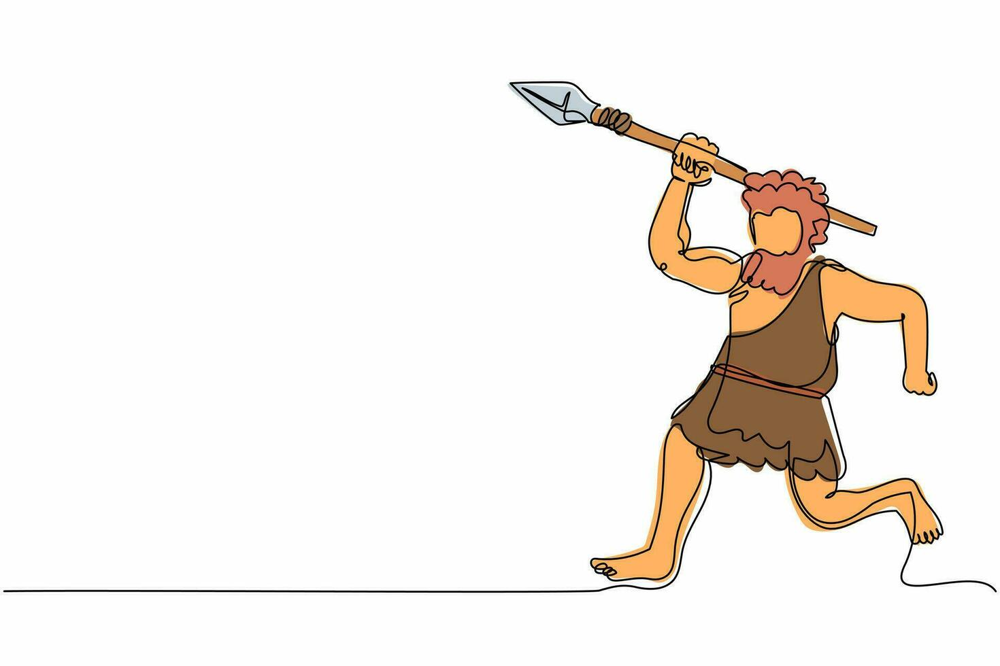

On Sunday I forced myself out of bed and took an Uber to the conference center at 6:30 in the morning. The driver told me he had just come from Orangetheory. He blasted classical music throughout the ride and shared facts about the city, like how Arroyo Seco Parkway, the highway connecting Pasadena to Los Angeles, is the oldest highway in the Western United States, and how if it were any other day of the week (and a bit later in the morning) we'd be in a standstill.
He said he likes picking up rides in Pasadena because of its "enclosed ecosystem." It's big enough that people will often request rides that stay within the city, which he enjoys because the people of Pasadena "care about history" and tend to preserve landscaped yards and tree-lined streets. That is, it's a good place to be when he wants to "stop and smell the roses."
Shortly after I arrived downtown, I made my way to a small coffee shop a couple blocks away from the convention center. The space had room for no more than two customers at a time and was decorated with, among other things, a cork board advertising liposuction, amateur drawings of mermaids, and a 5 foot photograph of a naked woman sitting cross-legged in a chair holding a magazine to cover her face and chest. Under the countertop, a miniature maltese nestled its body in a bed about three times its size. According to the sign above its head, he was 11 years old and had a track record of biting children (33 and counting). The barista told me two were from yesterday.
As I waited in line for my coffee I noticed a pair of photographs of skyscraper windows covered in blocky graffiti. They had a post-apocalyptic appeal to them. I had noticed the abandoned buildings when I arrived at the convention center (they were right across the street), but I didn't realize they had enough status to be immortalized as the subject of an art piece.
The specific buildings depicted were Oceanwide Plaza, also called the LA "graffiti towers," which began construction in 2015 but halted in 2019 when the Chinese developers ran out of funding due to government restriction of capital outflow. The buildings, designed to house hundreds of residential condos, a 5-star hotel, and a multi-story retail mall, were left abandoned for years until 2023 when graffiti artists broke into the property and tagged nearly all the floor-to-ceiling windows that were balcony-accessible.
Some people found this to be an impressive display of creativity, but others found it more symbolic of the city's urban decay. Regardless, the buildings command attention. Recently, however, plans were put in place to complete construction ahead of the 2028 Olympics, and in July of this year, they began to wash away the graffiti.
The barista then handed me my coffee and I made my way back to the convention center, past the trash-strewn train stop, boarded-up shops, and, of course, the graffiti towers. I scanned my eyes up and down their puzzling facade one last time before joining the lanyard-wearing crowd across the street.
I really was quite excited to be at the conference. After swimming in directionlessness regarding my interests and long-term goals for a good part of my first half of college, some mix of my background in drawing combined with coursework in computer science gave me the inkling that I would be interested in work at the intersection of computation and creativity. I was looking forward to learning about work in this field, as well as being filled with awe and inspiration, finding my lifelong passion, etc.
The first talk I went to was about AI for visual content generation. The first 10 minutes were filled with slides depicting detailed machine learning architectures that were too complex for me to understand, but the main idea was that they were building AI tools for unleashing creative potential. I was super on board until they showed the demo.
For context, I guess prior to this point video models couldn't generate clips longer than around a minute and struggled to achieve consistency (in characters, setting, lighting, and style) across separate clips. The researchers giving the talk in part solved this issue, enabling the generation of consistent long-form content.
Using this capability, the researchers made an 11-episode TV series, which they showed clips of during the demo. Dramatic music played over quick-cut fish-eye scenes of a Zootopia-style jaguar first driving through an oversaturated cityscape, then livestreaming with its human friend, thanking its fans for all the likes. I couldn't shake the thought that what I was looking at was, in my eyes, technically marvelous garbage.
I mean, objectively, this was a mind-blowing technological feat, and the fact that this was even remotely possible is astonishing. The lighting, the movement, and the weight of the characters would have probably taken months to produce before AI. But my amazement merely orbited my central feeling of revulsion. I'm used to seeing AI "slop" on my social media feed, and a lot of it I find amusing in its vapidness, like the anthropomorphic fruit cheating scandals, or the cat soap operas that usually end in divorce or unexpected pregnancy. My sense is that a lot of people similarly recognize the absurdity of this kind of content and find humor in it (think Shrimp Jesus), and watch it more for the spectacle than for any investment in the storyline or the content it has to offer. What I found so off-putting about the AI TV series, in comparison, was that the researchers were not tongue-in-cheek about what they had made. I was pretty horrified at the thought of a future where binging thoughtless AI-generated movies would be the norm.
I moved on, hoping the other talks would be less scary and more inspiring, but I unfortunately was hit with a similar feeling of unease when I went to a panel discussing the visual effects of Pixar's new movie, Hoppers. The panelists discussed all the minute choices they made in executing the visuals of the movie, like using backlighting to accentuate the fluffiness of the main beaver-robot's fur, omitting specular highlights on its eyes for a comic-like look, and layering blurry filters onto the background to bring visual attention toward the foreground. It was clear significant effort was put into the visual effects.
What they left out, however, was any discussion about (or rather, justification for) the character designs. The protagonist, a small beaver, embodies the strange push in recent animated movies to plague nearly every character with huge eyes and rounded face shapes that appear to have no underlying solid anatomy (e.g. Elio, Elemental, Luca, Soul, Turning Red, The Spongebob Movie, etc.). This contrasts with generally older 3D animated movies that have greater diversity of character designs (e.g. WALL-E, How to Train Your Dragon, Up, The Incredibles, Ratatouille, Kung Fu Panda). Whenever I see a new movie come out with this rounded art style, I get filled with an inexplicable rage.

In Hoppers, the beaver looks overtly optimized for a marketable version of cuteness—its entire body shape could be more or less completely described by squishing two or three balls of Play-Doh together, and the same can be said for every single other character in the film, animal and human alike. Yet, we can also make out every tuft of hair on the main beaver's body and the subtle color variations on its buck teeth. Once again, the creators achieved something technically marvelous with the visual effects, but failed to give depth and nuance to one of the most salient elements of the film, in this case the character design.
At another point in the week I attended a similar panel about the visual effects of The Mandalorian & Grogu. They spent a solid chunk of the time talking about the character design of Jabba the Hut's son, Rotta the Hut, who is a galactic slug gladiator in whatever corner of the Star Wars canon the show exists in. He's supposed to be a sympathetic character in the series, but unfortunately wrinkly, lumpy (ugly!) slugs are not sympathetic. So naturally, Rotta underwent a glow up. They gave him defined abs and the arms of a gym bro steroid addict, left the slug tail alone, and called it a day (could this be the ideal body type??). His high-resolution detail and slug movements (they gave him a barrel roll offensive attack maneuver!) once more, were objectively impressive animation and visual effects feats. But nobody seemed to stop and think twice about why a slug had abs in the first place.

The AI TV show, Hoppers, and The Mandalorian were all optimized in some way—for cheaper production (AI TV show), for character cuteness (Hoppers), or for character likeability (The Mandalorian). On the surface, these all seem to benefit the consumer. Prioritizing appealing character designs leads to greater viewer enjoyment, and cheaper production costs enables the creation of a greater supply of specialized content to satisfy the growing appetite of audiences. Moreover, each of these prioritize visual effect mastery—whether it be cross-clip consistency in AI-generated videos, to hyperrealistic fur texture, to slug animation—resulting in what is intended to be a more entertaining and visually pleasing experience for the viewer.
But these choices are not made for you and me, rather they are ultimately designed to maximize film studio profits. Greater volumes of content, more likeable characters, and stimulating visuals all keep us watching, regardless of whether or not the underlying content is of quality or even good for us to consume.
It’s easy to vilify media conglomerates and point pitchforks toward the faceless evil corporate agents that shove senseless content down our throats. Yet, these companies are simply playing the game of capitalism that our system supports. That is, they make this content because we consume this content.
Capitalism can be thought of as an evolutionary process, proliferating products that have greater market fitness than those that don’t. Over generations, this process in theory works incredibly well. Comfortable sneakers outcompete wooden clogs, and well-insulated homes outcompete wooden sheds for shelter. And yet, junk food outcompetes organic vegetables, and smoking outcompetes our own willpower. What has greater market fitness is not always what is best for us.
This is because in evolutionary processes, behaviors are not optimized for the current environment, as one might think, but for previous environments. 200 years ago we didn’t have ultra-processed foods saturated with sugars and nutritionally empty carbohydrates. Back then, the foods that had sugars and carbohydrates were the ones that gave us energy, so our bodies adapted to seek them out. As biologist Edward Wilson said, “we have paleolithic emotions; medieval institutions; and god-like technology.”
Just like junk food, media with bright colors, cute characters, and fast-paced action takes advantage of neural pathways adapted for a different time, one where attending to movement and color posed an advantage to our survival. And just like junk food, this form of media does not serve us well. The stories please us more and challenge us less, trading critical thought for mindless entertainment.

The good news is that despite our caveman instincts, we have the ability to perform executive reasoning and the power to choose what we consume. If we take a moment to pause and consider whether or not the content we consume is making our minds stronger or weaker, made to provoke us or entertain us, and choose to eat the organic vegetables of media over its processed junk food siblings, the environment will become noxious for content solely optimized to appease our paleolithic brains, and nutritious for content that pushes the bounds of thought and creativity.
The tags that climb the walls of downtown LA’s graffiti towers are not beautiful, nor were they easy to create, running in direct opposition to the kind of visual media our current environment supports the creation of. But the striking feat of nonconformism, spawned from the human drive to leave a mark on the world, serves as a reminder that we can move away from a world of beautiful garbage, and towards one where we value the ugly.